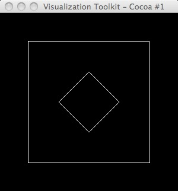
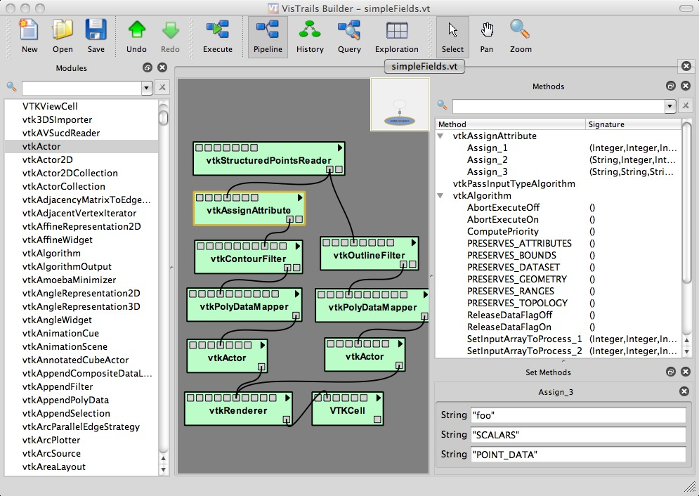
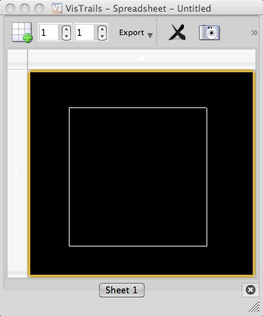

Sample dataset: (/Users/heiland/Documents/Glazier/Abbas/2010/VTK-dump/simple.vtk)
# vtk DataFile Version 3.0 silly data ASCII DATASET STRUCTURED_POINTS DIMENSIONS 3 3 1 SPACING 1 1 1 ORIGIN 0 0 0 POINT_DATA 9 FIELD FieldData 2 foo 1 9 float 3 3 3 3 1 3 3 3 3 bar 1 9 float 4 4 4 5 5 5 6 6 6
The following Python-VTK script generates expected results:
#!/usr/bin/env python
import vtk
ren1 = vtk.vtkRenderer()
renWin = vtk.vtkRenderWindow()
renWin.AddRenderer(ren1)
iren = vtk.vtkRenderWindowInteractor()
iren.SetRenderWindow(renWin)
reader = vtk.vtkStructuredPointsReader()
reader.SetFileName('/Users/heiland/Documents/Glazier/Abbas/2010/VTK-dump/simple.vtk')
aa = vtk.vtkAssignAttribute()
aa.SetInputConnection(reader.GetOutputPort())
aa.Assign("foo", "SCALARS", "POINT_DATA")
aa.Update()
contour = vtk.vtkContourFilter()
contour.SetInputConnection(aa.GetOutputPort())
contour.SetValue(0,2)
mapper = vtk.vtkPolyDataMapper()
mapper.SetInputConnection(contour.GetOutputPort())
mapper.ScalarVisibilityOff()
actor = vtk.vtkActor()
actor.SetMapper(mapper)
ren1.AddActor(actor)
outline = vtk.vtkOutlineFilter()
outline.SetInputConnection(reader.GetOutputPort())
outlineMapper = vtk.vtkPolyDataMapper()
outlineMapper.SetInputConnection(outline.GetOutputPort())
outlineActor = vtk.vtkActor()
outlineActor.SetMapper(outlineMapper)
ren1.AddActor(outlineActor)
renWin.Render()
iren.Start()


Contour filter: SetValue(0,2).

We see the outline but not the contour.